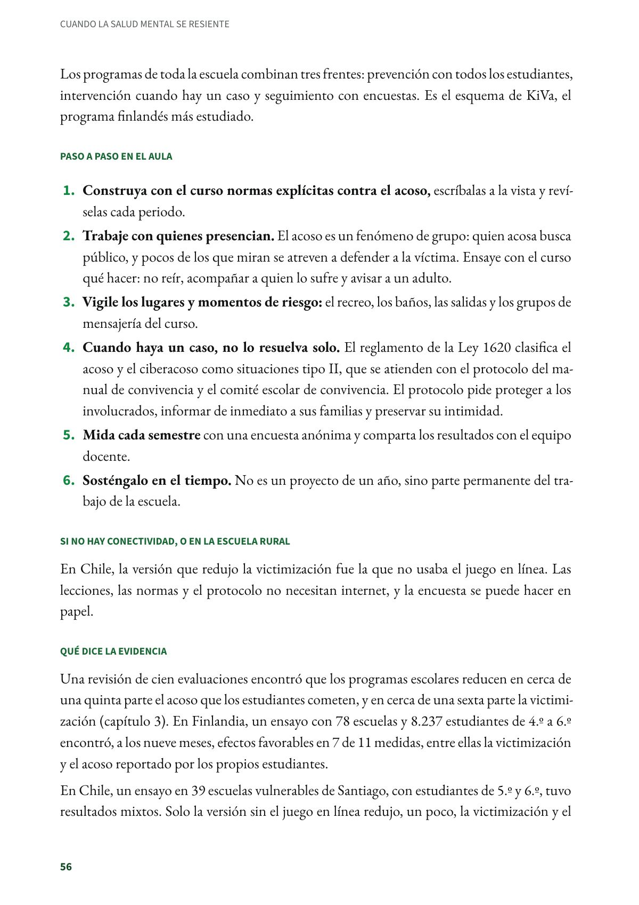
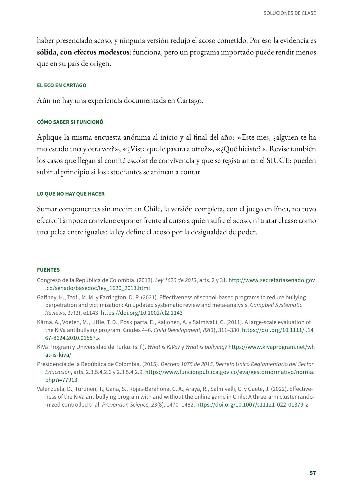

Detener el acoso con toda la escuela: los programas de prevención
Programas en los que toda la escuela, y no solo el aula, trabaja para prevenir y detener el acoso. Primaria y secundaria. Evidencia sólida.
PDF · 4 págs. · 87 KBEn resumen
- Evidencia: sólida.
- Para quién: Primaria y secundaria; los ensayos más citados se hicieron de 4.º a 6.º. Participa toda la institución: docentes, directivos y familias.
- Tiempo: Todo el año escolar, y de forma permanente: lecciones a lo largo del año, vigilancia diaria de los lugares de riesgo y una encuesta anónima cada semestre.
- Materiales: Normas escritas, un protocolo para los casos y una encuesta anónima. Algunos programas, como KiVa, tienen materiales propios con licencia.
- De dónde viene: Finlandia (KiVa, Universidad de Turku) y otros programas evaluados en el mundo, con un ensayo en Chile.
Qué es
La Ley 1620 de 2013 define el acoso escolar como una conducta intencional y repetida de agresión, intimidación, humillación, aislamiento o maltrato contra un estudiante, por parte de uno o varios compañeros con quienes tiene una relación de poder desigual. Puede ocurrir también por medios electrónicos (ciberacoso). La misma ley reconoce que el acoso tiene consecuencias sobre la salud, el bienestar emocional y el rendimiento escolar.
Los programas de toda la escuela combinan tres frentes: prevención con todos los estudiantes, intervención cuando hay un caso y seguimiento con encuestas. Es el esquema de KiVa, el programa finlandés más estudiado.
Paso a paso en el aula
- Construya con el curso normas explícitas contra el acoso, escríbalas a la vista y revíselas cada periodo.
- Trabaje con quienes presencian. El acoso es un fenómeno de grupo: quien acosa busca público, y pocos de los que miran se atreven a defender a la víctima. Ensaye con el curso qué hacer: no reír, acompañar a quien lo sufre y avisar a un adulto.
- Vigile los lugares y momentos de riesgo: el recreo, los baños, las salidas y los grupos de mensajería del curso.
- Cuando haya un caso, no lo resuelva solo. El reglamento de la Ley 1620 clasifica el acoso y el ciberacoso como situaciones tipo II, que se atienden con el protocolo del manual de convivencia y el comité escolar de convivencia. El protocolo pide proteger a los involucrados, informar de inmediato a sus familias y preservar su intimidad.
- Mida cada semestre con una encuesta anónima y comparta los resultados con el equipo docente.
- Sosténgalo en el tiempo. No es un proyecto de un año, sino parte permanente del trabajo de la escuela.
Si no hay conectividad, o en la escuela rural
En Chile, la versión que redujo la victimización fue la que no usaba el juego en línea. Las lecciones, las normas y el protocolo no necesitan internet, y la encuesta se puede hacer en papel.
Qué dice la evidencia
Una revisión de cien evaluaciones encontró que los programas escolares reducen en cerca de una quinta parte el acoso que los estudiantes cometen, y en cerca de una sexta parte la victimización (capítulo 3). En Finlandia, un ensayo con 78 escuelas y 8.237 estudiantes de 4.º a 6.º encontró, a los nueve meses, efectos favorables en 7 de 11 medidas, entre ellas la victimización y el acoso reportado por los propios estudiantes.
En Chile, un ensayo en 39 escuelas vulnerables de Santiago, con estudiantes de 5.º y 6.º, tuvo resultados mixtos. Solo la versión sin el juego en línea redujo, un poco, la victimización y el haber presenciado acoso, y ninguna versión redujo el acoso cometido. Por eso la evidencia es sólida, con efectos modestos: funciona, pero un programa importado puede rendir menos que en su país de origen.
El eco en Cartago
Aún no hay una experiencia documentada en Cartago.
Cómo saber si funcionó
Aplique la misma encuesta anónima al inicio y al final del año: «Este mes, ¿alguien te ha molestado una y otra vez?», «¿Viste que le pasara a otro?», «¿Qué hiciste?». Revise también los casos que llegan al comité escolar de convivencia y que se registran en el SIUCE: pueden subir al principio si los estudiantes se animan a contar.
Lo que no hay que hacer
Sumar componentes sin medir: en Chile, la versión completa, con el juego en línea, no tuvo efecto. Tampoco conviene exponer frente al curso a quien sufre el acoso, ni tratar el caso como una pelea entre iguales: la ley define el acoso por la desigualdad de poder.
Fuentes
Congreso de la República de Colombia. (2013). Ley 1620 de 2013, arts. 2 y 31. secretariasenado.gov.co
Gaffney, H., Ttofi, M. M. y Farrington, D. P. (2021). Effectiveness of school-based programs to reduce bullying perpetration and victimization: An updated systematic review and meta-analysis. Campbell Systematic Reviews, 17(2), e1143. doi.org
Kärnä, A., Voeten, M., Little, T. D., Poskiparta, E., Kaljonen, A. y Salmivalli, C. (2011). A large-scale evaluation of the KiVa antibullying program: Grades 4–6. Child Development, 82(1), 311–330. doi.org
KiVa Program y Universidad de Turku. (s. f.). What is KiVa? y What is bullying? kivaprogram.net
Presidencia de la República de Colombia. (2015). Decreto 1075 de 2015, Decreto Único Reglamentario del Sector Educación, arts. 2.3.5.4.2.6 y 2.3.5.4.2.9. funcionpublica.gov.co
Valenzuela, D., Turunen, T., Gana, S., Rojas-Barahona, C. A., Araya, R., Salmivalli, C. y Gaete, J. (2022). Effectiveness of the KiVa antibullying program with and without the online game in Chile: A three-arm cluster randomized controlled trial. Prevention Science, 23(8), 1470–1482. doi.org
Así se ve en el libro
4 páginas

